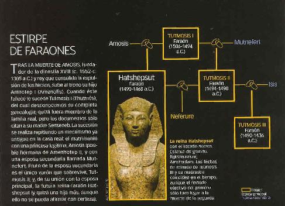
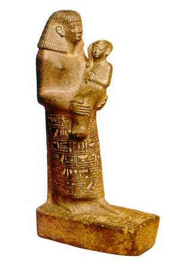
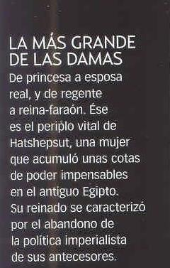
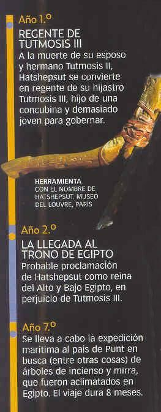
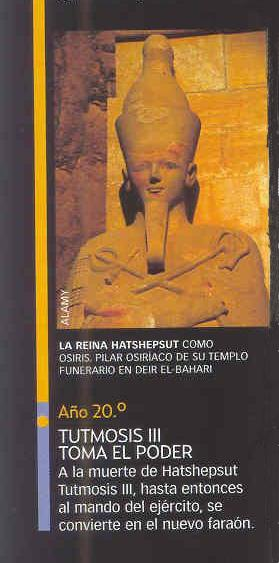

Estatua
colosal de Hatshepsut con forma de esfinge
Fue tallada en el
gran templo funerario levantado en Deir el-Bahari por esta reina de la Dinastía
XVIII. Museo Egipcio, El Cairo.
A orillas del Nilo, en un momento en que la dinastía XVIII emprendía un período de expansión imperialista hacia Nubia y Asia -hacia inicios del siglo XV a.C.- nació Hatshepsut, hija de Tutmosis I (Thutmés) y la reina Amosis (Iahmés). Nadie podía vaticinar entonces que la pequeña iba a convertirse en la primera mujer-faraón del Imperio Nuevo y que reinaría a lo largo de veinte años hasta su muerte. La personalidad de esta mujer y la peculiaridad de su reinado han despertado sentimientos encontrados, desde aquellos que la consideran un carácter extraordinario y decidido hasta los que no ven en ella más que a una hábil y ambiciosa usurpadora. Lo que es cierto es que para conseguir sus propósitos, Hatshepsut luchó por justificar con toda clase de argumentos sus decisiones.
EL NOMBRE Y EL DESTINO
A la muerte de Tutmosis I, Egipto se enfrentó al problema de la sucesión, que se solucionó casando a dos hermanastros. En este caso, la joven Hatshepsut, primogénita de Tutmosis I y de su esposa principal Amosis, con otro descendiente del rey muerto, su único hijo varón, Tutmosis II, habido con una esposa secundaria, Mutnefert. El mismo nombre de Hatshepsut ("la más grande de las damas") parece augurar lo singular de su destino. Por supuesto, mientras reinó su esposo ella se comportó como una soberana sin más aspiración que llevar los títulos que le correspondían: "Esposa del Dios" o "Gran Esposa Real".
Pero su cónyuge Tutmosis II murió y la reina empezó a dar señales de un talante especial. Además, Hatshepsut no estaba sola; de su unión con Tutmosis II había nacido al menos una hija, Neferure, que murió siendo niña. Hatshepsut se encontró compartiendo el trono sin ningún descendiente directo y, además, debiendo aceptar que el sucesor de su esposo muerto fuese su vástago Tutmosis III, hijo de una concubina. Pero Tutmosis III era apenas un niño y, desde luego, no podía gobernar; quien realmente manejará las riendas del país será la propia Hatshepsut, convertida en regente.
Todo parecía preparar el camino para que esta viuda -a la vez tía y madrastra de Tutmosis III- iniciara una carrera ascendente que la llevara a lo más alto: a su entronización como reina-faraón. Heredaba un gobierno firme y unificado, fruto de un período que se había iniciado con numerosas campañas militares emprendidas por los primeros reyes de la dinastía XVIII, entre ellos su padre Tutmosis I cuya imagen Hatshepsut: tuvo siempre presente. No cabe duda de que en la mente de la reina ya rondaba la posibilidad de hacerse con el trono, y que fue trabajando para que ésta se hiciera realidad. Sus relaciones con el poderoso clero de Amón y con la compleja administración del reino eran muy buenas, y, además, contaba con el apoyo de importantes prsonajes entre los sacerdotes y los dignatarios de la corte, lo que facilitaba el camino que se había marcado.
El obelisco dedicado por Hatshepsut en el gran templo del dios Amón en Karnak aparece aquí en primer término. Al fondo se puede ver el que levantó el Faraón Tutmosis I.
LA CARRERA DE UNA REINA
Los años de corregencia entre Tutmosis III y Hatshepsut se han cifrado en veintidós, porque tras esta fecha no se encuentran más datos de la reina. Durante este tiempo, sólo en los primeros años parece conformarse ella con un puesto inferior, el de rema regente. Pero a partir del año segundo, según unos, y del séptimo, según otros, Hatshepsut, tal y como refiere ella misma, se proclama rey legítimo del Alto y Bajo Egipto, aunque todavía no adopta una iconografía masculina. Así lo recoge el canciller Ineni en dos estelas de su tumba: "El rey [Tutmosis I] ascendió al cielo y se unió con los dioses. Su hijo (Tutmosis III) subió al trono como rey de las Dos Tierras, gobernaba sobre el trono de quien lo engendró. Su hermana, la "Esposa del Dios" Hatshepsut, conducía los asuntos del país".
Tras esto, la reina empezó a inscribir en su templo y en la Capilla Roja de Karnak las escenas oficiales de su proclamación y de su coronación como faraón, y comienza a ser representada como hombre. Desde ese momento en las inscripciones el masculino y el femenino se entremezclan: ¿se sentirían quizá confusos escribas y artesanos ante la figura de la mujer metamorfoseada en varón? Aún más: hay relieves y estatuas propias sólo de un soberano: esfinges de la reina con el tocado real nemes, figuras con faldellín real y torso masculino desnudo, sin pechos visibles de mujer. De forma paralela, la reina iría adoptando la totalidad de los cinco nombres que correspondían de manera exclusiva al monarca.
EL TEMPLO DE DEIR EL-BAHARI
Construido bajo la supervisión de Senmut, se trata de uno de los templos funerarios de la dinastía XVIII mejor conocidos y estudiados. Levantado en la montaña tebana, en la orilla occidental del Nilo, frente a Luxor, se distribuye a lo largo de tres terrazas consecutivas, Con clara voluntad propagandística, Hatshepsut hizo representar en sus relieves los episodios más importantes de su notable reinado.
La datación de los reyes egipcios se computaba a partir del momento en que eran entronizados. Pero no en el caso de Hatshepsut: ella lo hizo remontar al primer año de regencia, antes de la entronización. Y, pese a que no hay acuerdo respecto a la situación del "heredero legítimo", su hijastro y sobrino, durante los primeros años en los que usurpa el poder aparece acompañada por Tutmosis III cumpliendo los rituales divinos, como si existieran dos reyes simultáneos. Pero poco a poco Tutmosis III fue quedando relegado a la sombra de la reina y su protagonismo mermó, hasta el punto de que ella figuraba como la única ejecutora del poder sobre todo el país.
HATHOR, DIOSA DE LA REINA.
Las reinas egipcias se identificaban con Hathor, la diosa protectora de la montaña tebana, que era representada como una mujer con cabeza humana y orejas de vaca. Hatshepsut le dedicó una capilla compuesta por dos salas hipóstilas en su templo funerario. Una de ellas está decorada con capiteles hathóricos como el de la imagen
Relieve de un obelisco de Karnak en el que Hatsehpesut con atributos masculinos, aparece arrodillada y protegida por el dios Amón.
JUSTIFICACIÓN DE UN REINADO
Pese a la alta consideración que tuvo la mujer en el Egipto faraónico, impensable para cualquiera de sus coetáneas del mundo antiguo, llama poderosamente la atención que una mujer pudiera ascender a tan alto nivel, en un gobierno formado por hombres, sin que se produjera una revuelta. Consciente de ello, la reina se dedicó a justificar de muy diversos modos su derecho legítimo al trono. En el Speos Arternidos, por ejemplo, ordenó grabar una gran inscripción en la que declaraba la restauración de los cultos egipcios abandonados por el pueblo asiático de los hicsos. E incluso daba a entender, en otra inscripción, que era responsable de la misma expulsión de los hicsos: "Yo he restaurado lo que estaba en ruinas y he erigido lo que estaba destruido, por primera vez desde que los asiáticos estaban en Avaris. Yo he desterrado la abominación de los dioses y la tierra ha borrado sus huellas". En otro fragmento llegaría a afirmar: "He eliminado a quienes el gran dios detestaba y he capturado la tierra que pisaban sus sandalias". Nos encontramos, pues, ante una proclamación propagandística encaminada a justificar su derecho al trono. Pero no serían las únicas: Hatshepsut se consideraba hija legítima de un rey y esposa principal de otro, mientras que Tutmosis III había nacido de una esposa secundaria.
EL
VIAJE AL PAÍS DE PUNT.
Entre otras representaciones
de distintos episodios de su reinado, el templo de Deir el-Bahari guarda una
serie de relieves que narran el viaje al lejano país de Punt, al que la reina
envió una expedición comercial. El relieve, de un acusado realismo, muestra
la llegada de un barco egipcio a puerto.
LA RELIGIÓN COMO ARMA
En el terreno religioso la explicación se plantea de otro modo. Apoyada por el clero tebano y principalmente por su sumo sacerdote Hapuseneb, la reina hace responsable de su designación al propio dios Amón que, por medio del oráculo, en el transcurso de la fiesta de Opet, manifiesta sus deseos. Inscribe las escenas de su justificación teológica en la Capilla Roja del templo de Kamak y en su templo de millones de años, al oeste de Tebas -hoy en Deir el-Bahari-, empezado nada más ser coronada y concluido antes de su muerte.
Se trata, sin duda, de la obra maestra de Hatshepsut y de un personaje importantísimo en su corte: Senmut, hombre de extracción modesta que llegó a ser tutor de Neferure y "mayordomo de la Esposa del Dios". Es curioso que Senmut, que según algunos autores fue amante de la reina, figure, pese a no ser arquitecto, como responsable de la construcción del santuario, que su imagen aparezca en el interior del templo e, incluso, que su tumba esté construida al abrigo de aquél, tres prerrogativas inusuales en la civilización faraónica. Precisamente fue en Deir el-Bahari donde Hatshepsut mandó grabar los datos más importantes de su reinado, como viñetas en las que, por primera vez, un monarca proporciona información de su vida sobre los muros de un templo funerario.
Puesta de sol en el Mar Rojo. las naves y los emisarios de la reina-faraón surcaron sus aguas en dirección a Punt, posiblemente situado en tierras de Somalia, en busca -entre otras riquezas-de árboles de incienso.
En la segunda terraza del templo encontramos la herramienta religiosa que la reina emplea para justificar su derecho al trono: la teogamia o "nacimiento divino", cuya muestra plástica aparece aquí por primera vez en toda la historia de Egipto. En ella explica de una forma muy gráfica las razones que la inducen a gobernar sobre las Dos Tierras, dejando patente ante hombres y dioses sus derechos, El razonamiento es el siguiente: como hija de Tutmosis I, ella se vincula directamente al dios Amón; es Él quien se ha encarnado en su padre para engendrarla, como se lee en el diálogo entre los dioses Tot y Amón: "Aquella es una princesa, su nombre es Amosis. Es más hermosa que cualquier otra mujer en todo el país; es la esposa del soberano, del rey Aajeperkara (Tutmosis l) Sin embargo, Su Majestad es todavía un niño. Por favor, acude (a) ella". Y, sigue, el dios Amón "se dirigió a ella inmediatamente, se inflamó de amor por ella; le entregó su corazón, dejó que ella le viera en su figura divina después de que Él compareciera ante ella, de modo que ella se llenó de alegría al contemplar su perfección; el amor por Él entró en su cuerpo. Hatshepsut-jemet-Amón (la más grande de las damas a la que Amón envuelve) es el nombre de este hijo tuyo que yo he puesto en [tu] cuerpo... Ella ejercerá un benéfico reinado en todo el país.
.

SENMUT Y NEFERURE.
Uno de los personajes mas poderosos de la corte de Hatshepsut fue Senmut, quien tomó a su cargo la educación de Neferure, la hija de la reina, que aquí aparece en sus brazos. Museo Field, Chicago
Tutmosis III, el sucesor de Hatshepsut, en una estatua conservada en el Museo Arqueológicode Luxor. Hijo de Tutmosis II y de su concubina Isis, retomó las campañas militares de los primeros reyes de la dinastía XVIII.
Aún de manera más explícita, en otra escena Amón aproxima el anj o símbolo de la vida a la boca de Amosis, la madre de Hatshepsut; el dios y Amosis están sentados cara a cara, con las piernas entrelazadas y sus brazos rozándose. Un poco más allá, aparece un relieve único: Amosis se nos presenta embarazada, acompañada por Heqet y Khnum, que la conducen hacia el punto donde tendrá lugar el alumbramiento; en este trance tan peligroso, son estas dos divinidades vinculadas al embarazo quienes la custodian. Finalmente, Amosis coge a la pequeña en su regazo y los dioses proceden a su presentación oficial ante su padre Amón. De este modo, Egipto cuenta con una reina-faraon. Durante el transcurso de su vida Hatshepsut construyó dos tumbas, una en Wádi Sikket Tâqet el-Said, que abandonó al convertirse en faraón, y otra en el Valle de los Reyes (KV20). Desconocemos las causas de su muerte, pero sabemos que fue Tutmosis III el encargado de realizar los ritos fúnebres para que pudiera vivir eternamente. No obstante, años después, la figura de Hatshepsut fue atacada y perseguida, con el objetivo de que su memoria desapareciera. Este acoso se achaca a un rencoroso Tutmosis III, aunque algunos estudiosos creen que fue posterior. Aun así, el recuerdo de la reina ha sobrevivido, como atestiguan las inscripciones que ella misma dejó como prueba de su férrea voluntad.
EL TEMPLO DE MEDINET HABU
Cuando Rarnsés III construyó su templo de Medinet Habu incorporó a su recinto otro más pequeño levantado por Hatshepsut y Tutmosis III, y que ahora se encuentra tras el segundo pilono. En ese templo, el nombre de la soberana ha sido borrado y sustituido por el de sus ancestros Tutmosis I y Tutmosis II, una prueba más de la persecución que sufrió la memoria de esta reina a su muerte
Vista del templo funerario de la reina Hatshepsut en Dair el-Bahari, en primer plano. Junto al templo de Hatshepsut, Tutmosis erigó un santuario situado entre aquél y el del faraón Men tuhotep II (al fondo)
|

|
|

|
|

|
National Geographic.- HISTRORIA- Númeo 8